Overview
hhmR allows users to create high-quality heatmaps from
labelled, hierarchical data. Specifically, for data with a two-level
hierarchical structure, it will produce a heatmap where each row and
column represents a category at the lower level. These rows and columns
are then grouped by the higher-level group each category belongs to,
with the names for each category and groups shown in the margins. While
other packages (e.g. dendextend) allow heatmap rows and
columns to be arranged by groups, I believe this is the only R package
which also labels the data at both levels - i.e. both category and group
names are shown along the left and bottom margins.
Hierarchical Heatmaps (hhm)
The main function within the package is hhm. This
function is useful if you wish to create a heatmap where the categories
shown on both the x and y axis can be grouped in some way. This heatmap
will order the categories by their assigned group and present both the
categories and group labels along the axes. To illustrate how this
function can be used, we use internal migration data from a fake country
(example_migration). This country is made up of regions,
with each region containing multiple counties. This hierachical
structure is summarised below:
# Import dplyr for data cleaning
library(dplyr)
# Summarise hierarchical data structure
example_migration %>% group_by(`Origin Region`) %>%
reframe(`Origin County` = unique(`Origin County`)) %>%
setNames(c("Region","County"))
#> # A tibble: 18 × 2
#> Region County
#> <chr> <chr>
#> 1 Midlands Silverlake
#> 2 Midlands Thornbury
#> 3 Midlands Maplewood
#> 4 Midlands Hawthorne
#> 5 Midlands Pinehurst
#> 6 North Greenridge
#> 7 North Windermoor
#> 8 North Bramblewood
#> 9 South East Stonebridge
#> 10 South East Brookfield
#> 11 South East Ashford
#> 12 South East Glenville
#> 13 South East Sunnyvale
#> 14 South East Westfield
#> 15 South West Riverton
#> 16 South West Meadowbrook
#> 17 South West Fairhaven
#> 18 South West OakdaleThis dataset contains information on the number of people that have
moved between these counties / regions over a given period of time. It
contains five columns: an Origin County (and the
Origin Region it is within), a
Destination County (and the Destination Region
it is within), and the number of people who have migrated between the
origin and destination counties during the observation period
(Migration).
# Show data
head(example_migration)
#> Origin County Destination County Origin Region Destination Region Migration
#> 1 Greenridge Greenridge North North 420
#> 2 Windermoor Greenridge North North 28
#> 3 Bramblewood Greenridge North North 28
#> 4 Silverlake Greenridge Midlands North 37
#> 5 Thornbury Greenridge Midlands North 27
#> 6 Maplewood Greenridge Midlands North 35Initial Heatmap
A useful way of visualising migration data is using a migration
matrix or heatmap. However, as this data is hierarchical, it would also
be useful to show how migrants have moved between regions within the
same figure. This is where the hhm function can be useful.
It can create a heatmap which shows the number of migrants that have
moved between the different counties, with the rows and columns ordered
and labelled by region.
To run the function, Origin County and
Destination County are provided as lower-level categories
to be shown along the y and x axes respectively
(i.e. ylower and xlower). Additionally,
Origin Region and Destination Region are
provided as upper-level groups via which the rows and columns are
ordered (i.e. yupper and xupper). Finally,
Migration provides the values with which to populate the
heatmap, while yttl_width and xttl_height are
used to ensure there is enough space for the region names to be shown
correctly.
# Create Intial heatmap
hierarchical_heatmap = hhm(df = example_migration,
ylower = "Origin County",
xlower = "Destination County",
yupper = "Origin Region",
xupper = "Destination Region",
values = "Migration",
yttl_width = 0.22,
xttl_height = 0.22)
# View result
hierarchical_heatmap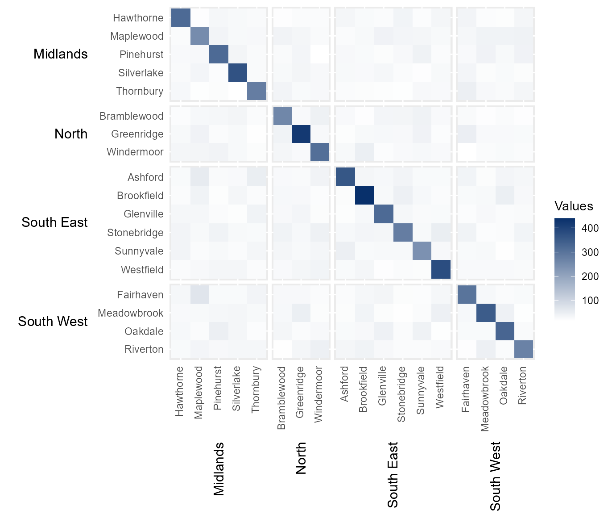
Remove diagonal
In the above example, the darkest colours are all shown along the
diagonal. This is because, across a given period of time, the majority
of the population does not migrate, meaning their origin and destination
counties are the same. In order to focus on people who moved between
different counties, we can remove the diagonal by setting
rm_diag to TRUE.
# Remove diagonal from heatmap (i.e. hide static populations)
removed_diag = hhm(df = example_migration,
ylower = "Origin County",
xlower = "Destination County",
yupper = "Origin Region",
xupper = "Destination Region",
values = "Migration",
yttl_width = 0.22,
xttl_height = 0.22,
rm_diag = TRUE)
# View result
removed_diag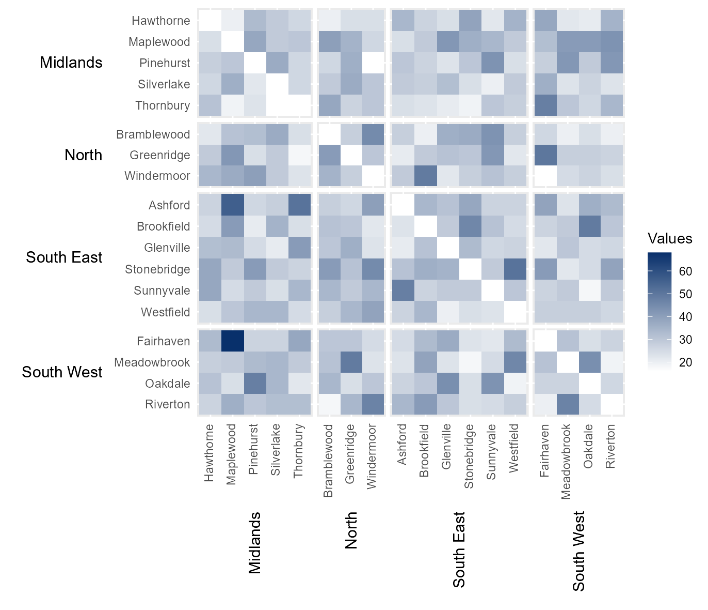
Normalise legend
Sometimes it can be useful to normalise the values within a heatmap,
so different datasets can be compared using the same legend. This can be
easily done by setting norm_lgd to TRUE.
# Nomalise the legend
normalised_lgd = hhm(df = example_migration,
ylower = "Origin County",
xlower = "Destination County",
yupper = "Origin Region",
xupper = "Destination Region",
values = "Migration",
yttl_width = 0.22,
xttl_height = 0.22,
rm_diag = TRUE,
norm_lgd = TRUE)
# View result
normalised_lgd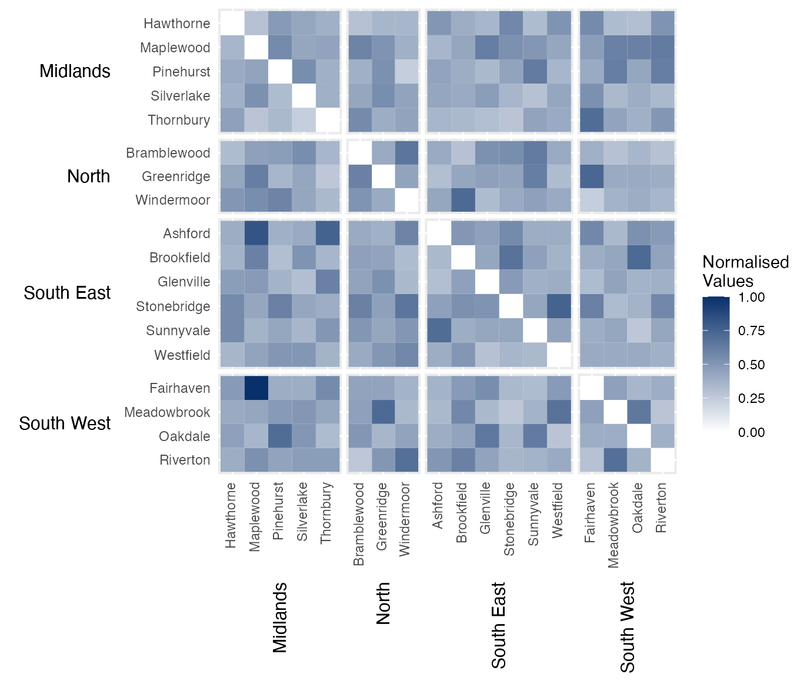
Manually define continuous colour scheme
The default colour scheme fades from blue to white. However, the
legend colour scheme can be define manually by passing a vector of
hexcodes to the argument cclrs. In this example, the
viridis colour scheme has been provided.
# Manually define colour scheme for heatmap (uses viridis colour scheme)
viridis_12 = c("#440154FF","#482173FF","#433E85FF","#38598CFF","#2D708EFF","#25858EFF",
"#1E9B8AFF","#2BB07FFF","#51C56AFF","#85D54AFF","#C2DF23FF","#FDE725FF")
# Assign continuous colour scheme
cont_clrs = hhm(df = example_migration,
ylower = "Origin County",
xlower = "Destination County",
yupper = "Origin Region",
xupper = "Destination Region",
values = "Migration",
yttl_width = 0.22,
xttl_height = 0.22,
rm_diag = TRUE,
norm_lgd = TRUE,
cclrs = viridis_12)
# View result
cont_clrs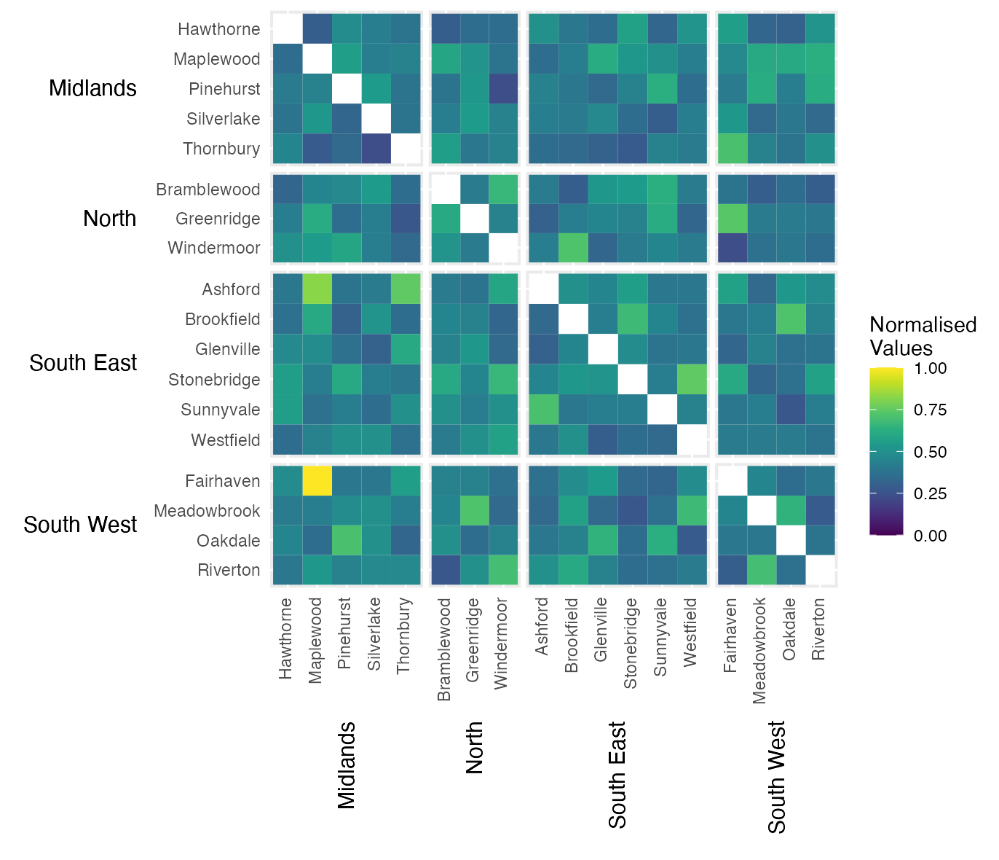
Break data into equal interval bins
The function also contains the option to break the data into a
specified number categories, based on equal interval breaks between 0
and the maximum value within the dataset. This can be done by passing
the number of desired categories to bins.
# Break legends into a specified number of bins
# (of equal intervals between 0 and the maximum value in `values`)
bins_15 = hhm(df = example_migration,
ylower = "Origin County",
xlower = "Destination County",
yupper = "Origin Region",
xupper = "Destination Region",
values = "Migration",
yttl_width = 0.22,
xttl_height = 0.22,
rm_diag = TRUE,
bins = 15)
# View result
bins_15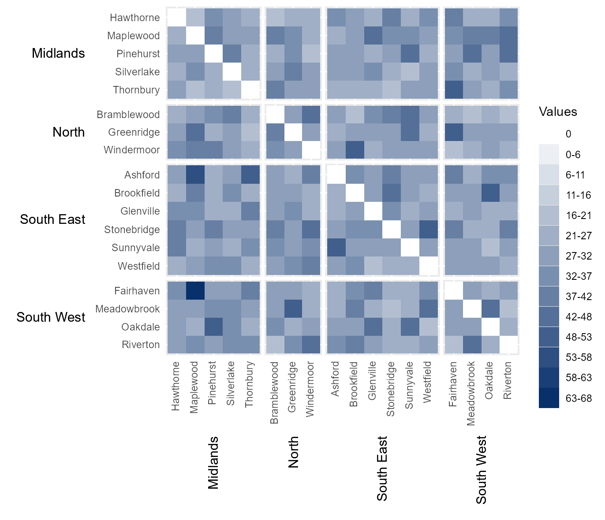
Manually define interval breaks
At times it might be desirable to manually define the intervals
breaks between categories. For example, if the data is highly skewed or
normally distributed then equal interval breaks may be inappropriate.
Manual breaks can be provided by passing a vector of intervals to
cbrks. In this instance, the hhmR function
log_seq has been used to create a vector of logarithmically
increasing values between 1 and the maximum value in the dataset (not on
the diagonal).
# Manually break data into categories using user-specified intervals.
cbrks = log_seq(example_migration[example_migration[["Origin County" ]] !=
example_migration[["Destination County"]],] %>%
.$Migration %>% max(), 12, rmv_extremes = TRUE)
# Show interval breaks
cbrks
#> [1] 1 2 4 6 8 11 14 19 25 35
# Manually assign legend categories
legend_cats = hhm(df = example_migration,
ylower = "Origin County",
xlower = "Destination County",
yupper = "Origin Region",
xupper = "Destination Region",
values = "Migration",
yttl_width = 0.22,
xttl_height = 0.22,
rm_diag = TRUE,
cbrks = cbrks)
# View result
legend_cats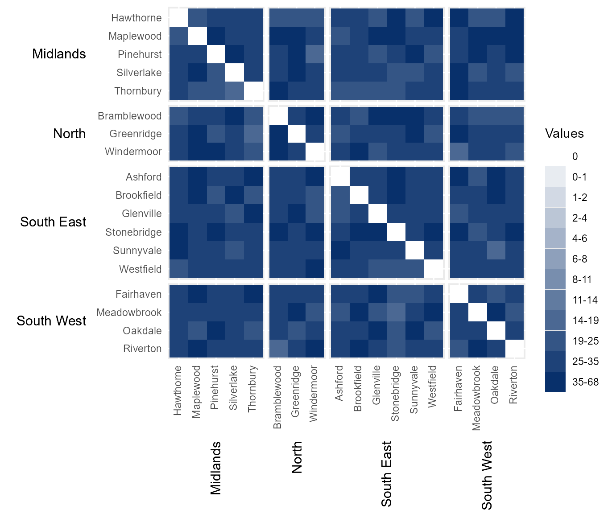
Manually assign categoric colours
It is also possible to manually define the colour of each category by
passing a vector of hexcodes to cclrs. The length of this
vector must be two longer then the vector passed to
cbrks.
# Manually assign colours to legend categories
cat_clrs = hhm(df = example_migration,
ylower = "Origin County",
xlower = "Destination County",
yupper = "Origin Region",
xupper = "Destination Region",
values = "Migration",
yttl_width = 0.22,
xttl_height = 0.22,
rm_diag = TRUE,
cbrks = cbrks,
cclrs = viridis_12)
# View result
cat_clrs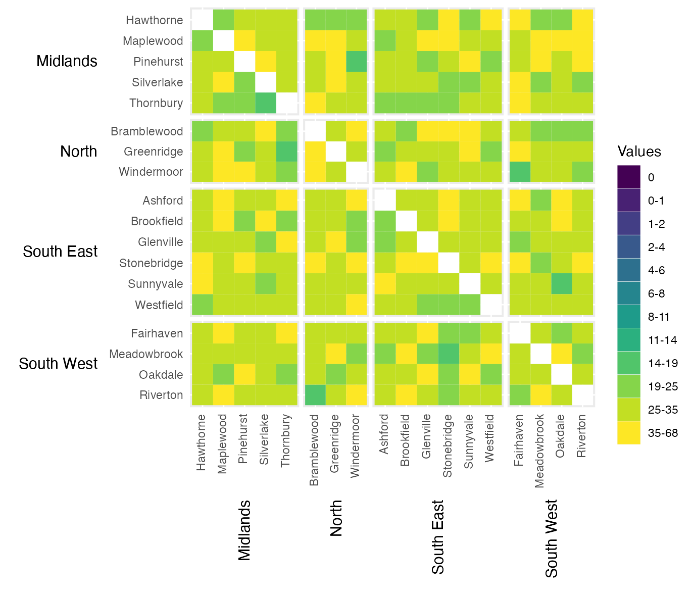
Time-series heatmaps (tshhm)
Another common challenge with hierarchical data is visualising how it
changes over time. The function tshhm is design to address
this. This function is useful if you wish to create a time-series
heatmap where the categories shown on the y axis can be grouped in some
way. This heatmap will order the categories by their assigned group and
present both the categories and group labels along the y-axis.
To illustrate this, we use immigration data between 2011-2015 for the
same fake country as the previous example
(example_time_series). This country is made up of the same
regions, with each region containing the same counties as shown. It
contains four columns: a County (and the
Region it is within), the Year of observation,
and the number of immigrants a county recieved in a given year
(Immigration).
# Show data
head(example_time_series)
#> # A tibble: 6 × 4
#> Region County Year Immigration
#> <chr> <chr> <dbl> <int>
#> 1 North Greenridge 2011 7452
#> 2 North Greenridge 2012 NA
#> 3 North Greenridge 2013 298
#> 4 North Greenridge 2014 8800
#> 5 North Greenridge 2015 4265
#> 6 North Windermoor 2011 8016Initial Heatmap
To run the function, the variable County is provided as
the lower-level categories (lower) to be shown along the
y-axis, while the variable Region is provided as the
upper-level groups (upper) with which to order and group
the heatmap rows. Additionally, Year is provided as the
time intervals to be shown on along the axis (times), while
Immigration provides the values with which to populate the
heatmap (values). Finally, yttl_width and is
used to ensure there is enough space for the region names to be shown
correctly on the y-axis. Note that NA values are displayed as blank.
# Intial heatmap
time_series_heatmap = tshhm(df = example_time_series,
lower = "County",
upper = "Region",
times = "Year",
values = "Immigration",
yttl_width = 0.25)
# View result
time_series_heatmap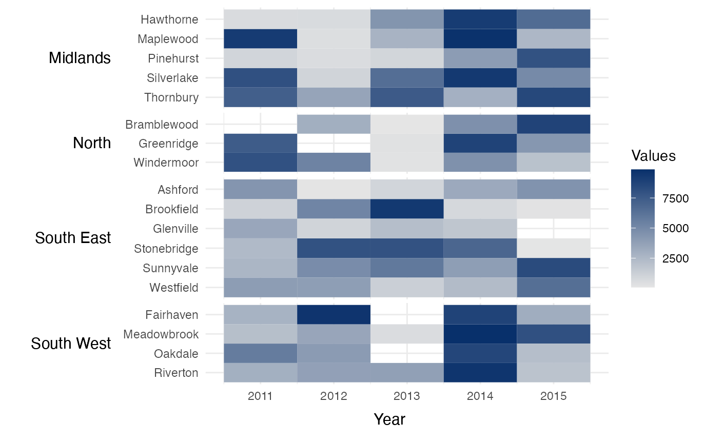
Sort rows in ascending order
It can sometimes be useful to arrange rows in ascending or descending
order, depending on the values within the heatmap. The parameter
sum_ascend allows for this functionality by arranging the
rows within in group. The default option is alphabetical,
which orders rows in alphabetical order from top to bottom. Other
options include sum_ascend and mean_ascend,
which order rows in ascending order (top to bottom) based on the row
totals and row means respectively. This order can be reversed with the
options sum_descend and mean_descend. Manually
defining the order of upper-level groups (Region in this
example) is demonstrated at the end of the vignette.
# Arrange counties within each region by total number of immigrants
# across all five years (ascending from top to bottom)
sort_ascending = tshhm(df = example_time_series,
lower = "County",
upper = "Region",
times = "Year",
values = "Immigration",
sort_lower = "sum_ascend",
yttl_width = 0.25)
# View result
sort_ascending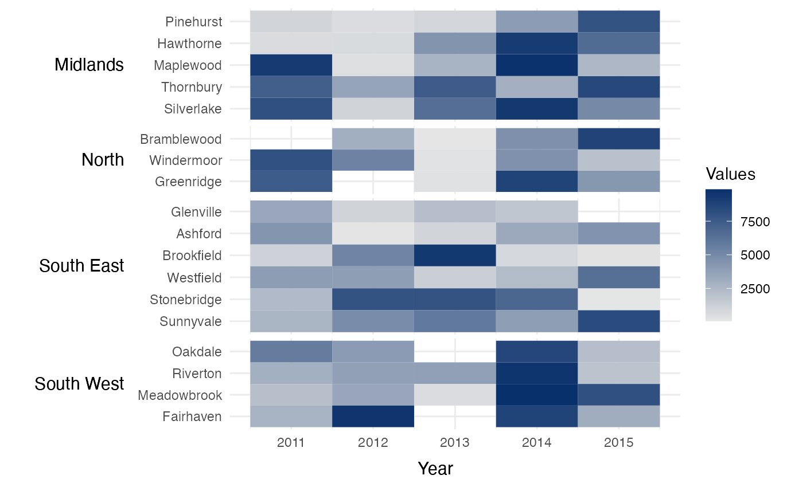
Normalise legend
Sometimes it can be useful to normalise the values within a heatmap,
so different datasets can be compared using the same legend. This can be
easily done by setting norm_lgd to TRUE.
# Nomalise the legend
normalised_lgd = tshhm(df = example_time_series,
lower = "County",
upper = "Region",
times = "Year",
values = "Immigration",
sort_lower = "sum_ascend",
norm_lgd = TRUE,
yttl_width = 0.25)
# View result
normalised_lgd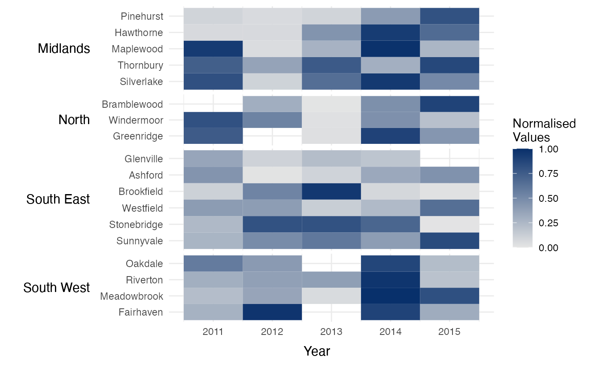
Manually define continuous colour scheme
The legend colour scheme can be defined manually by passing a vector
of hexcodes to the argument cclrs. In this example, the
viridis colour scheme has been provided.
# Assign continuous colour scheme
cont_clrs = tshhm(df = example_time_series,
lower = "County",
upper = "Region",
times = "Year",
values = "Immigration",
sort_lower = "sum_ascend",
norm_lgd = TRUE,
cclrs = viridis_12,
yttl_width = 0.25)
# View result
cont_clrs
Assign NA colours
It can sometimes be useful to visually highlight cells where data is
missing. This can be done by passing a hexcode to the argument
na_colour. This will cause all NA values within the dataset
to be displayed in the specified colour.
# Assign colour for NA values
na_clrs = tshhm(df = example_time_series,
lower = "County",
upper = "Region",
times = "Year",
values = "Immigration",
sort_lower = "sum_ascend",
norm_lgd = TRUE,
cclrs = viridis_12,
na_colour = "grey80",
yttl_width = 0.25)
# View result
na_clrs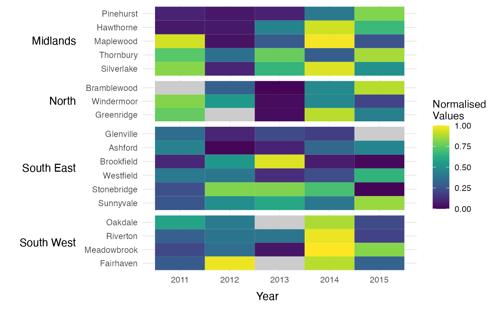
Break data into equal interval bins
The function also contains the option to break the data into a
specified number categories, based on equal interval breaks between 0
and the maximum value within the dataset. This can be done by passing
the number of desired categories to bins.
# Break legends into a specified number of bins
# (of equal intervals between 0 and the maximum value in `values`)
bins_15 = tshhm(df = example_time_series,
lower = "County",
upper = "Region",
times = "Year",
values = "Immigration",
sort_lower = "sum_ascend",
bins = 15,
yttl_width = 0.25)
# View result
bins_15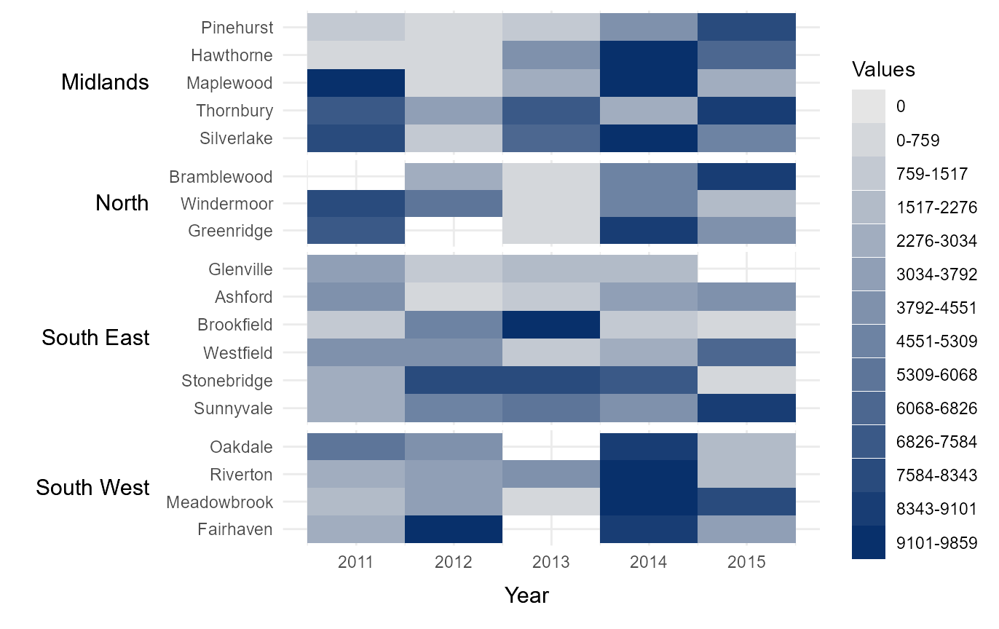
Manually define interval breaks
At times it might be desirable to manually define the intervals
breaks between categories. For example, if the data is highly skewed or
normally distributed then equal interval breaks may be inappropriate.
Manual breaks can be provided by passing a vector of intervals to
cbrks. In this instance, the hhmR function
log_seq has been used to create a vector of logarithmically
increasing values between 1 and the maximum value in the dataset.
# Manually break data into categories using user-specified intervals.
cbrks = log_seq(example_time_series %>% .$Immigration %>% max(na.rm = TRUE),
12, rmv_extremes = TRUE)
# Show breaks
cbrks
#> [1] 1 113 239 382 548 743 982 1291 1725 2468
# Manually assign legend categories
legend_cats = tshhm(df = example_time_series,
lower = "County",
upper = "Region",
times = "Year",
values = "Immigration",
sort_lower = "sum_ascend",
cbrks = cbrks,
yttl_width = 0.25)
# View result
legend_cats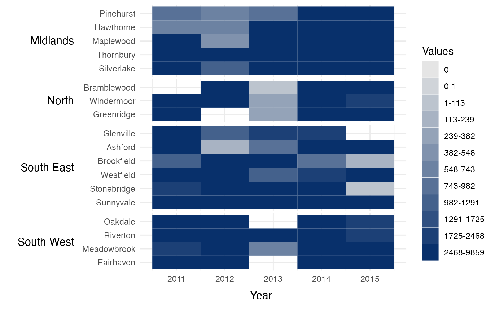
Manually assign categoric colours
It is also possible to manually define the colour of each category by
passing a vector of hexcodes to cclrs. The length of this
vector must be two longer then the vector passed to
cbrks.
# Manually assign colours to legend categories
cat_clrs = tshhm(df = example_time_series,
lower = "County",
upper = "Region",
times = "Year",
values = "Immigration",
sort_lower = "sum_ascend",
cbrks = cbrks,
cclrs = viridis_12,
na_colour = "grey80",
yttl_width = 0.25)
# View result
cat_clrs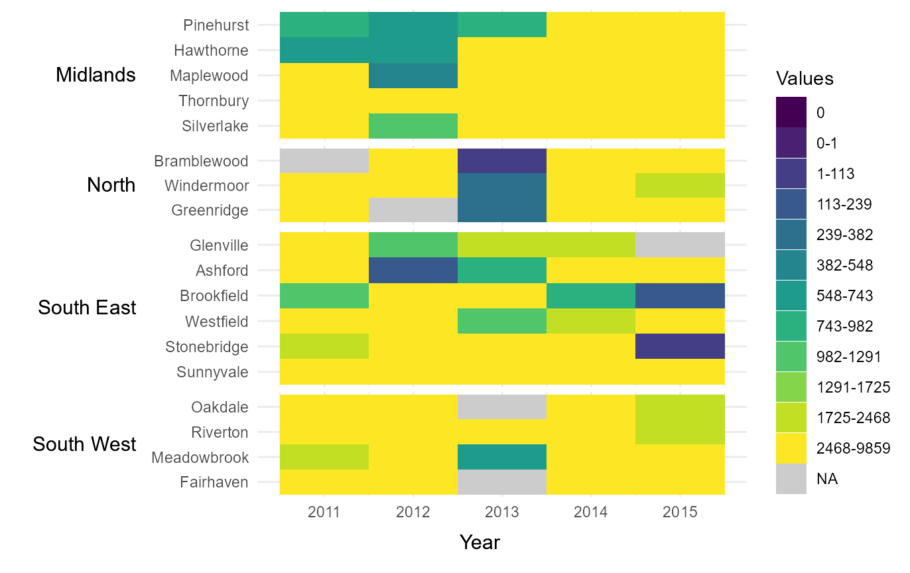
Manually define the order of x-axis values and y-axis groups
If the variable supplied to times is numeric, it will by
default sort values in ascending order from left to right along the
x-axis. However, this order can be manually changed by supplying a
factor to times. To demonstrate this, we have supplied the
variable Year as a factor with the years 2011-2015 ordered
non-chronologically.
Similarly, the groups supplied to Upper will by default
be displayed alphabetically from top to bottom along the y-axis.
However, this order can be manually changed by supplying a factor to
upper. In the below example, we have supplied the variable
Region with regions ordered from North-West to
South-East.
# Manually define order of x-axis and groups using factor levels
new_time_series = example_time_series %>%
mutate(Year = factor(Year,
levels = c(2012,2011,2014,
2013,2015)),
Region = factor(Region,
levels = c("North","Midlands",
"South West",
"South East")))
# Manually define order of x-axis and groups
rearrange_axes = tshhm(df = new_time_series,
lower = "County",
upper = "Region",
times = "Year",
values = "Immigration",
sort_lower = "sum_ascend",
cbrks = cbrks,
cclrs = viridis_12,
na_colour = "grey80",
yttl_width = 0.25)
# View result
rearrange_axes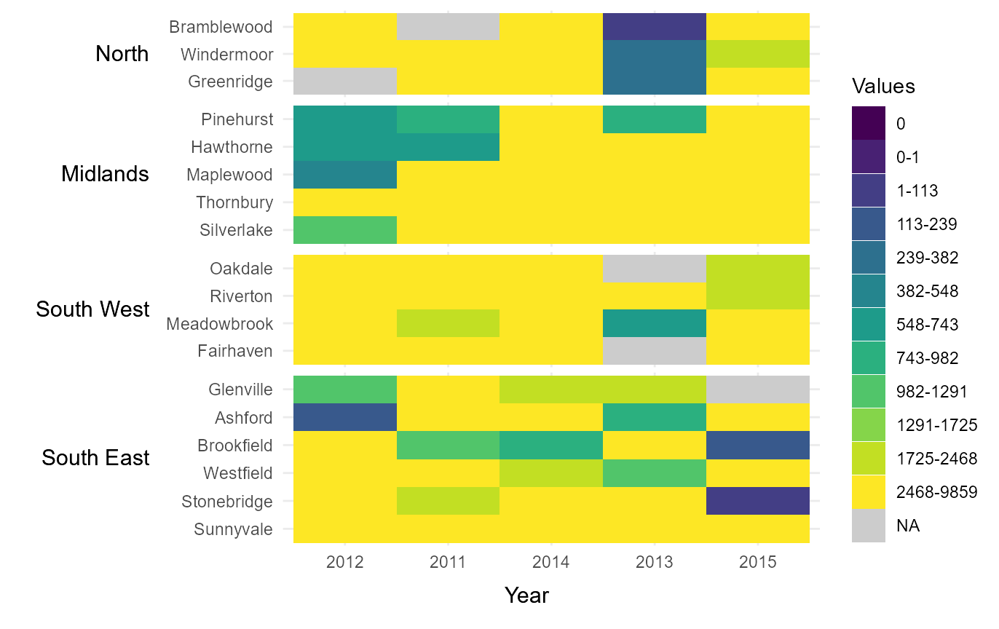